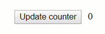
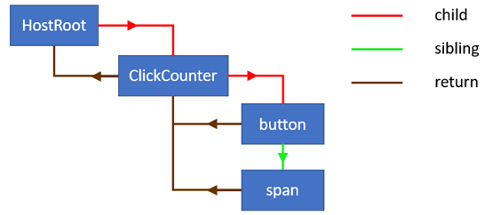
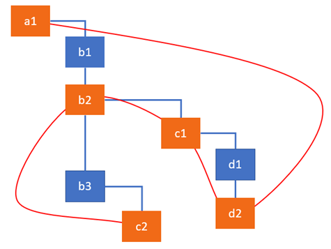
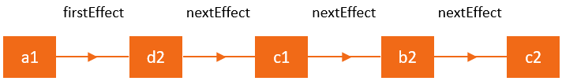
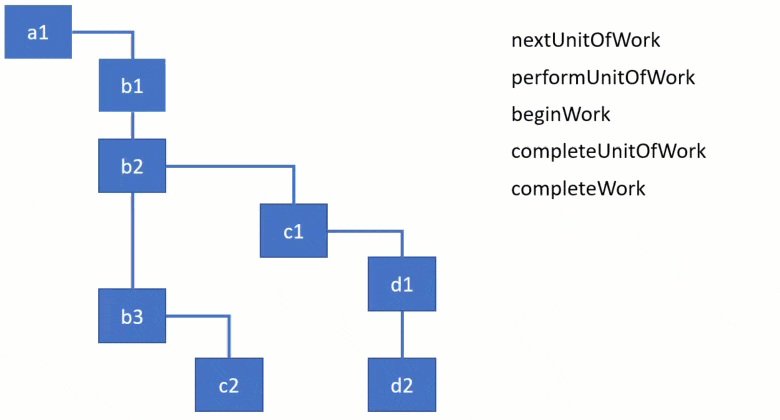

【译】Fiber：深入了解 React 的全新调度算法
React 是一个用来制作 UI 的 JavaScript 库，其核心是跟踪组件状态的变化，并将其更新在屏幕上的机制机制，在 React 中，这一过程被称为协调。每当我们调用 setState 时，React 都会检测 state 和 props 是否发生了变化，并在 UI 中重新渲染组件。
React 的文档很好地提供了这个机制的大致简介：整个过程中 React 元素的担当角色、生命周期方法和 render 方法，以及对各个子组件实施的 diff 算法。render 方法返回的这些不可变的 React 元素树通常被我们称为「virtual DOM」。在以前，这个术语帮助我们理解了 React 的工作模式，但也带来了许多困惑，所以现在 React 的文档已经不再使用它了，所以本文将会将他们称作「React 元素树」。
为了维护状态，除了 React 元素树，React 同时也维护着一些内部实例（如组件、DOM 节点等）构成的树。自 v16 开始，React 推出了一种全新的维护内部实例树的算法实现，并取代号为「Fiber」。要想了解 Fiber 架构带来的种种好处，你可以看这篇文章：《React 在 Fiber 中使用链表的原因和方法》。
如果没有 Dan Abramov 的帮助，这篇文章得花多得多的时间才能完成，而且全面性也会大打折扣！👍
这是 React 内部架构系列教程的第一篇。在这篇文章中，我会深入介绍与核心算法有关的重要概念和数据结构。当我们了解地足够多的时候，我们会开始探索取得和操作 Fiber 树的算法和主要函数。这个系列的下一篇文章将会演示 React 是如何使用这个算法来实施初次渲染，并处理 state 和 props 的。从那开始我们将移步调度器的种种细节，以及实现副作用列表的机制。
本文会介绍许多进阶知识 🧙。我鼓励你阅读本文，并理解 React 工作时的各种黑魔法。如果你打算为 React 作出贡献，这一系列文章也会是一个很好的指南。我是逆向工程的重视拥趸，所以这儿会有许多指向 React 16.6.0 源码的链接。
要学的东西很多，所以如果你感觉有压力，或者对有些东西现在还不太理解，请多花点时间，因为这很值得。需要注意的是你不需要这里的任何知识来使用 React，这篇文章只关乎 React 的内部实现原理。
我在 ag-Grid 担任技术推广工程师。 If you’re curious to learn about data grids or looking for the ultimate React data grid solution, get in touch or give it a try with the guide “Get started with React grid in 5 minutes”. I’m happy to answer any questions you may have.
背景
本文的示例是这样一个应用——界面上有一个按钮，点击它以后数字会增加，并在屏幕上渲染出来：

以及它的代码如下：
1 | class ClickCounter extends React.Component { |
你可以在这里把玩一下这个例子，它就是一个简单的组件，在其 render 方法中返回 button 和 span 两个元素。当你点击按钮时，事件处理器会更新组件的 state，然后作为结果，span 元素中的文字会被更新。
React 在协调的过程中会做很多事情，比如在我们的示例 app 中，React 会在初次渲染完成后以及 state 被更新后做的事情大致包括：
- 在
ClickCounter中更新count属性； - 找到
ClickCounter和其 props，并进行比较； - 更新
span元素的 props。
协调的过程中还会发生其他事情，如调用生命周期方法和更新引用（refs）。在 Fiber 架构中，这些事情都统一地被称为「事务」。事务的种类通常取决于 React 元素的种类，例如对于一个类组件，React 需要创建一个实例，但是函数组件就不需要。你肯定知道，React 中有很多种元素，如类和函数组件、宿主组件（也就是 DOM 节点）、Portal 等。createElement 方法的第一个参数决定了 React 元素的种类，这个方法一般用于在 render 方法中创建 React 元素。
在开始探索 Fiber 算法和事物之前，我们现来熟悉一下 React 内部使用的数据结构。
从 React 元素到 Fiber 节点
React 中每个元素都具有一个 UI 上的表现，我们可以称作「视图」或者「模板」。例如我们示例中 ClickCounter 组件的模板就是：
1 | <button key="1" onClick={this.onClick}>Update counter</button> |
React 元素
模板经过 JSX 编译器后，你就得到了一系列 React 元素，这些元素才是你真正在 React 组件中 render 方法返回的东西，而不是看起来的 HTML。由于 JSX 并不是非用不可的，ClickCounter 组件的 render 方法其实也可以重写成这样：
1 | class ClickCounter { |
render 方法中调用的 React.createElement 函数将会创建一个这样的数据结构：
1 | [ |
可以看到，React 给这些对象加上了 $$typeof 属性来将其标记为 React 元素。接下来是用来描述一个元素 type、key 和 props 属性，它们的值取决于你传递给 React.createElement 方法的参数。请注意一下这里 React 会将字符串也作为 span 和 button 节点的子节点，而点击事件处理器则会被放置在 button 的 props 中。React 元素还会有一些字段如 ref，但是他们与这篇文章讨论的范畴无关。
ClickCounter 对应的 React 元素没有任何 props 或 key：
1 | { |
Fiber 节点
在协调的过程中，每个 React 元素的 render 方法返回的数据会被合并至 Fiber 节点树，每个 React 元素都有一个与之对应的 Fiber 节点。与 React 元素不同的是，Fiber 并不是每次渲染都会重新生成，它们是保存着组件状态和 DOM 的可变数据结构。
前边我们说到过，React 元素类型的不同会导致 React 需要进行不同的操作。在我们的示例中，类组件 ClickCounter 会被调用生命周期方法和 render 方法；然而对于 span 这种宿主节点（DOM 节点），React 则会进行 DOM 的更新。所以每个 React 元素都会被转化成对应类型的 Fiber 节点，后者会描述需要进行的事务。
你可以认为 Fiber 节点就是一种代表需要进行的事务的数据结构，换言之也就是事务的最小单位。Fiber 架构同时还使得跟踪、安排、暂停和终止事务变得简单。
当一个 React 元素第一次被转换成一个 Fiber 节点的时候，React 会通过 createFiberFromTypeAndProps 函数来使用元素的信息来生成 Fiber 节点。在同步更新中，React 会重复使用 Fiber 节点，并根据与之相关的 React 元素上的数据来更新必要的属性。根据 key 属性，React 还可能会改变节点的层级。如果一个元素不再被 render 方法返回，React 会删除它。
请参阅
ChildReconciler函数，它会列出所有的操作类型，以及对应的 React 会对 Fiber 节点进行的操作。
由于 React 会为每个 React 元素都创建 Fiber 节点，且这些元素构成一棵树，我们会得到一棵树状结构的 Fiber 节点。譬如在我们的示例中，这棵树会像这样：

通过 child、sibling 和 return 属性，所有 Fiber 节点会通过一个链表连接在一起。请参阅我的文章《React 在 Fiber 中使用链表的原因和方法》来了解为什么要这么设计。
Current 树和 workInProgress 树
初次渲染完成后，React 会得到一棵代表当前 app 状态的树，并据此渲染 UI。我们通常把这棵树称作「current」。当 React 开始更新的时候，它会创建一棵名叫「workInProgress」的树，这棵树反映了用来刷新 UI 的新状态。
所有对 Fiber 进行的操作都来自于 workInProgress 树。当 React 遍历 current 树的时候，对于每个 Fiber 节点，React 会创建一个新的节点（alternate），由这些 alternate 形成 workInProgress 树。新的节点使用 React 元素 render 方法返回的数据创建。在更新完成，所有的事务都结束后，React 会得到一棵 alternate 树，并可以刷新 UI。当 workInProgress 被渲染到屏幕，它就会取代先前的树，成为新的 current 树。
React 的核心原则之一是连贯性。React 总是会一次性地更新 DOM，而不会仅渲染部分结果。workInProgress 树充当的就是一个不会对用户展示的「草稿」，所以 React 可以先处理所有的节点，再把所有的变更刷新到屏幕。
在源码中，你可以找多从 current 和 workInProgress 树获取 Fiber 节点的函数，比如其中一个的函数签名如下：
1 | function updateHostComponent(current, workInProgress, renderExpirationTime) {...} |
每个 Fiber 节点都在 alternate 字段中保存着另一棵树中它的副本： current 树中的指向 workInProgress 树中的，反之亦然。
副作用
我们可以把 React 组件都想象成函数，他们接收 state 和 props，并计算出对应的 UI 的描述。由此，任何其他的操作，如操作 DOM 或调用生命周期方法都可以看作副作用，简称作用。副作用在文档中是这么描述的：
你之前可能已经在 React 组件中执行过数据获取、订阅或者手动修改过 DOM。我们统一把这些操作称为“副作用”，或者简称为“作用”。
由此可以看出大多数 state 和 props 的更新都会导致副作用的产生。由于实施副作用也是一种事务，Fiber 是追踪除了更新以外的副作用的一种很有力机制。每个 Fiber 节点都可以和副作用相关联，存储在 effectTag 字段中。
所以，Fiber 中的副作用定义了更新完成后示例们需要进行的事务。对于宿主节点（DOM 元素），事务包括添加、更新和删除元素。对于类组件，React 可能需要更新 refs 并调用 componentDidMount 以及 componentDidUpdate 等生命周期方法。其他的 Fiber 节点也都有它们对应的副作用。
副作用链表
React 处理更新的速度极快，为了达到这样的性能，它采用了许多很有趣的技术。其中之一便是构造一个带有副作用的 Fiber 节点组成的线形表，以此加快遍历速度。遍历一个线形表要比遍历一棵树快多了，而且这样（只有带副作用的 Fiber 节点才在链表中）可以避免在没有副作用的节点上浪费时间。
这个链表的目的是标记所有需要更新 DOM 或其他副作用的节点。它是 finishedWork 树的子集，它使用 current 和 workInProgress 树节点中的 nextEffect 属性而不是 child 属性来做为指针。
Dan Abramov 给出了一个副作用链表的比喻，他喜欢把它比作一棵圣诞树，树上挂小灯的电线把所有有副作用的节点都连在了一起。为了可视化这一过程，我们想象一下以下这棵 Fiber 节点树，其中桔红色的节点是有事务的。比如，我们的更新使得 c2 需要插入至 DOM，d2 和 c1 需要更新属性，b2 需要调用生命周期方法。副作用链表会将它们连在一起，因此 React 稍后可以跳过其他节点。

你现在知道带有副作用的节点是如何构成链表的了，当遍历节点的时候，React 会通过 firstEffect 指针来找出链表的第一个元素。因此上图可以像下图一样表示成一个线形表：

你可以看到，React 会依照先子节点再夫节点的顺序实施副作用。
Fiber 树的根
每一个 React 都有一个或多个 DOM 元素作为容器。我们的示例中它是一个带有 container ID 的 div 元素：
1 | const domContainer = document.querySelector('#container'); |
React 会为每个容器创建一个 fiberRoot 元素，你可以通过对 DOM 元素的引用来访问它：
1 | const fiberRoot = query('#container')._reactRootContainer._internalRoot |
这个 Fiber Root 就是 React 保存对 Fiber 树的引用的地方。它保存在 Fiber Root 的 current 属性中：
1 | const hostRootFiberNode = fiberRoot.current |
Fiber 树的根是一个具有特殊类型 HostRoot 的 Fiber 节点，React 会在内部创建它，并把它作为你最顶层组件的父节点。可以通过 stateNode 属性从 HostRoot 节点回到 FiberRoot：
1 | fiberRoot.current.stateNode === fiberRoot; // true |
你可以从访问最顶层的 HostRoot 开始探索整棵 Fiber 树，或者你也可以像从一个组件实例获取一个单独的节点：
1 | compInstance._reactInternalFiber |
Fiber 节点的结构
现在，我们来看看 ClickCounter 组件产出的 Fiber 节点：
1 | { |
以及 DOM 元素 span：
1 | { |
Fiber节点中有许许多多的字段，前边我已经解释过 alternate、effectTag 和 nextEffect 的作用了。我们来看看其他的：
stateNode保存着对 Fiber 节点对应的组件实例、DOM 节点或其他 React 元素的引用。通常我们认为这个属性保存了 Fiber 对应的本地状态；type定义了 Fiber 对应的函数或类。对于类组件，它指向构造函数；对于 DOM 元素，它是 HTML 标签。我经常用这个字段来确定一个 Fiber 节点对应的元素。tag定义了 Fiber 的类型。在协调算法中，它被用于确定需要完成的事务是什么。上面说到过，不同的 React 元素会对应不同的事务。createFiberFromTypeAndProps函数会把一个 React 元素映射成对应的 Fiber 节点。在我们的示例 app 中，ClickCounter的tag属性的值是1，代表ClassComponent；而span元素则是5，代表HostComponent。updateQueue是一个状态更新、回调函数和 DOM 更新组成的队列；memoizedState是 Fiber 上一次渲染中用来创建输出的 state，当触发更新时，它代表着当前 UI 显示着的 state；memoizedProps则是 Fiber 上一次渲染中用来创建输出的 props；pendingProps是 React 元素已经完成更新后新的数据产生的 props，它会被应用于子组件或 DOM 元素；key是一个唯一的标识符，用于让 React 分辨哪些元素发生了变化（从列表中增加或删除）。它与 React 的列表渲染有关，请参阅这里。
你可以在这里找到完整的 Fiber 节点的结构。我删掉了许多前文已经提到过的字段，跳过了上一篇文章中说过的用于组成树状结构的 child, sibling 和 return 字段，一些 Scheduler 专用的字段如 expirationTime、childExpirationTime 和 mode 也没有被提及。
算法概况
React 的事务执行过程分为两个部分：渲染（render）和提交（commit）。
在第一个阶段 render 中，React 会把更新应用于通过 setState 或 React.render 排好期的组件，并分析出 UI 中需要更新的部分。如果是初次渲染，React 会为 render 方法返回的每个元素都创建一个新的 Fiber 节点。在接下来的更新中，已经存在的 React 元素的 Fiber 将会被复用并更新。这一阶段的结果是由标记了副作用的 Fiber 节点构成的一棵树。这些副作用描述了在接下来的 commit 阶段需要进行的事务。在这一阶段中，React 会把接收标有副作用的 Fiber 树，并把它应用到实例上。React 会遍历副作用链表，并把 DOM 更新等操作呈现给用户。
有一件事很重要：在第一阶段过程 render 中的事务是可以异步执行的。React 可以根据可用时间的多少，在处理一个完或多个 Fiber 节点后停下来，暂存已经完成的事务，并发送一些事件，然后再从刚刚停下的地方继续。虽然有的时候它还是需要舍弃之前的结果然后从头再来。这种暂停得以实现的原因是，实施这些事务并没有产生类似于 DOM 更新之类的任何用户可见的更改。相反地，下一个阶段 commit 永远是同步执行的。这是因为这一阶段产生的结果对用户是可见的，比如更新 DOM，所以 React 需要将其一次性做完。
调用生命周期方法是 React 需要执行的事务之一。有些方式是在 render 阶段执行的，而有些则是在 commit阶段。在第一阶段 render 中会被调用的方法有：
[UNSAFE_]componentWillMount(已废弃)[UNSAFE_]componentWillReceiveProps(已废弃)getDerivedStateFromPropsshouldComponentUpdate[UNSAFE_]componentWillUpdate(已废弃)render
如你所见，自 v16.3 开始，有些历史遗留的 render 阶段生命周期方法被标记了 UNSAFE，在文档中它们被称作历史遗留生命周期方法。他们会在将来的某个 16.x 发布中被废弃，而它们没有 UNSAFE 的副本也将在 17.0 中被移除。你可以在这里了解到这些变更以及推荐的迁移路径。
你对这种变更的原因感到困惑吗？
好吧，我们刚刚说到 render 阶段并不产生如更新 DOM 的副作用，因此 React 可以异步地处理组件的更新（甚至在多个线程中完成）。然而，标记为 UNSAFE 的生命周期方法常常被误解和轻微地误用。开发者们倾向于把带有副作用的代码放置于这些方法中，这会导致全新的异步渲染实现产生问题。尽管只是没有 UNSAFE 的副本会被移除，这些方法仍可能在即将退出的的并发模式中导致问题（不过你可以选择不用这种模式）。
以下列表为会在 commit 阶段被调用的方法：
getSnapshotBeforeUpdatecomponentDidMountcomponentDidUpdatecomponentWillUnmount
因为这些方法会在同步的 commit 阶段被调用，它们可以包含副作用，以及操作 DOM。
好的，现在我们已经了解完了背景，并看完了遍历树和实施事务的算法的基本概况，是时候继续深究了。
Render 阶段
协调算法始终会通过调用 renderRoot 函数，从最顶层的 HostRoot Fiber 节点开始。然而，React 会跳过已经处理过的 Fiber 节点，直到它找到了还有尚未完成事务的节点。例如，如果你在组件树的较深位置调用了 setState，React 将还是从顶开始，不过会快速地跳过各个父组件，直到它找到了 setState 被调用的那个组件。
事务循环的主要流程
所有节点都在事务循环中被处理，以下是同步版的事务循环的实现：
1 | function workLoop(isYieldy) { |
在以上的代码中，nextUnitOfWork 引用着 workInProgress 树中带有事务的 Fiber 节点。React 取回 Fiber 树时，它会使用这个变量来检查是否还有其他带有未完成事务的 Fiber 节点。这个过程结束后，这个变量要不然是下一个 Fiber 节点，要不然就是 null，若是后者，React 就会退出事务循环，并可以提交这些改动了。
React 中主要有 4 个函数用来取回整棵树和完成事务：
为了演示它们的工作方法，请看一下下边这个动图，它描述了取回 Fiber 树的过程。出于演示的目的，我在这儿使用的是这些函数的简化版本实现，每个函数接收并处理一个 Fiber 节点。React 向下处理的过程中，你可以看到活动的 Fiber 节点也发生了变化。在动图中可以很清楚地看这个算法是如何从一棵子树跳到另一棵的：它会先完成事务，再返回父节点。

备注：竖直方向的连线代表的是兄弟节点，而拐弯的连线代表父子。例如
b1没有子节点，而b2有一个子节点c1。
上面的动图在这儿有一个视频版本，以便你暂停和回放，并观察当前节点和函数的状态。理论上，你可以把 beginWork 想象成「进入」一个组件，而 completeWork 就是「退出」了。你可以在这里玩一玩示例实现。
让我们从前两个函数 performUnitOfWork 和 beginWork 开始：
1 | function performUnitOfWork(workInProgress) { |
performUnitOfWork 是 Fiber 中所有操作开始的地方，它接收一个 workInProgress 树中的 Fiber 节点，并通过调用 beginWork 函数来开始事务。为了演示，我们此处就简单地把 Fiber 的名字 log 出来，然后标记这个节点为事务已完成。beginWork 函数始终会返回循环中下一个待处理的节点或 null。
如果下一个子节点存在，它会在 workLoop 函数中被赋值给 nextUnitOfWork 变量。然而，如果没有子节点，React 就知道它已经到达了子树的底端，因此可以完成对这个节点的操作。在这个节点完成后，React 会操作它的兄弟节点，并返回其父节点。这些工作是在 completeUnitOfWork 函数中完成的：
1 | function completeUnitOfWork(workInProgress) { |
可以看到，这个函数的主旨就是一个大大的 while 循环。workInProgress 中的节点没有子节点的时候，React 就会进入这个函数。
在当前 Fiber 的事务结束后，React 会检查它是否有兄弟节点，如果有，React 会退出函数，并把兄弟节点返回。这个兄弟节点会被赋值给 nextUnitOfWork 变量，React 会从这个兄弟节点开始实施事务。有一点很重要：此时此刻 React 仅仅完成了先前兄弟节点的事务，它还没有对父节点实施事务。只有从子节点开始的当所有分支都结束了，它才会开始完成父节点的事务，并原路返回。
从实现中可以发现，performUnitOfWork 和 completeUnitOfWork 主要是用来进行迭代的，而真正的操作发生在 beginWork 和 completeWork 函数中。本系列的下一篇文章中我们将会了解 React 进入 beginWork 和 completeWork 函数的时候，ClickCounter 组件和 span 节点会发生什么。
Commit 阶段
这一阶段从 completeRoot函数开始。这也是 React 更新 DOM，并调用挂载前后的生命周期方法的地方。
进入这一阶段时，React 会保存着两棵树和副作用链表。第一棵树代表着当前 UI 中的 state；第二棵则是 render 阶段中产生的 alternate 树，源码中叫做 finishedWork 或 workInProgress 树，代表着 UI 中需要渲染的 state。和 current 树一样，这棵 alternate 树也是由 child 和 sibling 指针连起来的。
接下来是副作用链表——通过 nextEffect 指针连起来的 finishedWork 树。请记住副作用链表是运行 render 阶段的结果，该链表的目的描述需要插入、更新或删除的节点，以及需要调用生命周期方法的组件。而这个链表中的节点就是 coomit 阶段中会被迭代的。
出于 debug 的目的，
current树可以从FiberRoot节点的current属性中访问到，finishedWork树可以从HostFiber节点的alternate属性访问到。
Commit 阶段的核心函数是 commitRoot，它做的事情基本上是：
- 在被标记了
SnapShot副作用的节点上调用getSnapshotBeforeUpdate生命周期方法； - 在被标记了
Deletion副作用的节点上调用componentWillUnmount生命周期方法； - 进行 DOM 的增删改；
- 把
finishedWork树设置为新的 current 树； - 在被标记了
Placement副作用的节点上调用componentDidMount生命周期方法； - 在被标记了
Update副作用的节点上调用componentDidUpdate生命周期方法。
在调用了挂载前生命周期函数 getSnapshotBeforeUpdate 后，React 会提交树中所有的副作用，这一步有两个阶段。第一阶段会执行所有的 DOM（宿主元素）的插入、更新、删除以及 ref 的卸载。然后 React 会把 finishedWork 树分配给 FiberRoot，并把 workInProgress 树标记为 current 树。这一过程是在第一次 commit 阶段完成后以及第二次 commit 完成前进行的，所以前一棵树还在进行 componentWillUnmount，而 finishedWork 树正在执行 componentDidMount/Update；第二阶段 React 会调用其他所有的生命周期方法，和 ref 回调。这些方法会分成好几轮，以确保所有的替换、更新和删除都顺利执行了。
下边是一个实现了上述过程主旨的函数实现：
1 | function commitRoot(root, finishedWork) { |
上面的每一个子函数都实现了一个循环，从而迭代副作用链表，并检测副作用的类型。当它找到与本函数有关的副作用的时候就会执行。
挂载前生命周期方法
下边是一个例子，其中的代码会对副作用树进行迭代并检测节点是否带有 Spapshot 副作用：
1 | function commitBeforeMutationLifecycles() { |
对于一个类组件，这个副作用意味着调用 getSnapshotBeforeUpdate。
DOM 更新
commitAllHostEffects 函数是 React 更新 DOM 的地方。这个函数基本上就是定义了需要进行的操作的种类，并执行之：
1 | function commitAllHostEffects() { |
React 会在 commitDeletion 函数中调用 componentWillUnmount 方法，这还怪好玩的。
挂载后生命周期方法
commitAllLifecycles 是 React 调用所有剩余的生命周期函数的地方，如 componentDidUpdate 和 componentDidMount。
终于结束了！如果你对这篇文章有任何问题，请在评论中写出。你也可以看看本系列的下一篇《深入探索 React 的 state 和 props 更新机制》。我还有许多关于调度器、子协调过程和副作用列表构建过程的文章正在写作中，我还有创作一个以这篇文章为基础的 debug 心得分享的视频。
血都要获得更多信息，请在 Twitter 和 Medium 关注我。感谢你的阅读！如果你喜欢这篇文章，请给我点个鼓掌 👏。这对我大有帮助，而且可以让更多的人看到这篇文章。